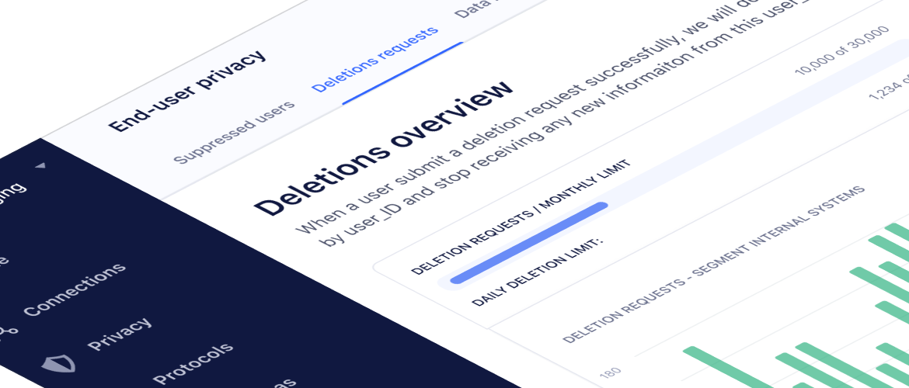

Customer Deletion Dashboard
Overview
This project involved designing a customer data deletion dashboard that complies with privacy regulations while providing a seamless user experience for administrators.
Problem
The existing process for handling customer data deletion requests was manual, time-consuming, and lacked proper audit trails. Compliance with GDPR and CCPA was also a concern.
Solution
Created an intuitive dashboard that automates the deletion workflow, provides clear status updates, and maintains comprehensive audit logs for compliance purposes.
Results
Reduced manual processing time by 80% and improved compliance documentation. Admin satisfaction scores increased significantly with the new streamlined interface.